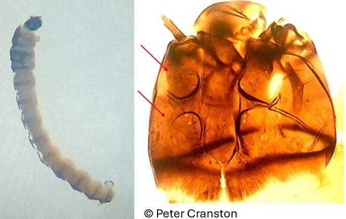
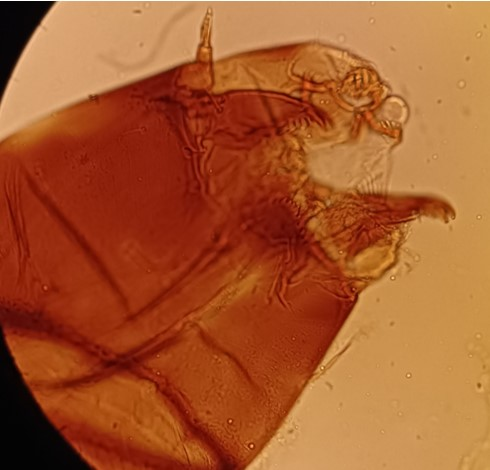

Sous famille des Diamesinae
Mentum avec de nombreuses dents.


Capsule céphalique avec des tubercules
Giffes des parapodes postérieurs en disposition circulaire. Sclérification dorsale du thorax et des segments abdominaux caractéristique